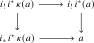
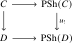
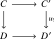
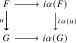
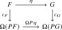

Notation 20.7.1. Given an admissible class of Waldhausen categories \(C\), and \(D\) a pointed category with finite limits, we denote by \[ \FunProd(\WaldCat_C,D) \] the full subcategory of \(\Fun(\WaldCat_C,D)\) spanned by finite product preserving functors and we write \[ \Add(\WaldCat_C,D) \] for the full subcategory of \(\Fun(\WaldCat_C,D)\) spanned by additive functors. Up to size issues one can enforce the additivity property for formal reasons, as explained in the next proposition.
Proposition 20.7.2. If \(D\) is a pointed compactly generated category, then so is \(\Add(\WaldCat_C,D)\) for any small admissible class of Waldhausen categories \(C\). More precisely, \(\Add(\WaldCat_C,D)\) is a left Bousfield localization of the compactly generated category \(\FunProd(\WaldCat_C,D)\) by a small family of maps between compact objects. In particular, the full embedding \[ \Add(\WaldCat_C,D)\hookrightarrow\FunProd(\WaldCat_C,D) \] commutes with filtered colimits and has a left adjoint. Furthermore, in the case where \(D=\An_{\bullet}\), the full embedding \[ \WaldCat_C\catop\hookrightarrow \FunProd(\WaldCat_C,\An_{\bullet}) \] commutes small with sifted colimits.
Proof
The is a Yoneda embedding \[ h\colon\WaldCat_C\catop\to \FunProd(\WaldCat_C,\An_{\bullet}) \] We define the family of maps \(S\) in \(\FunProd(\WaldCat_C,\An_{\bullet})\) explicitly as follows:
(i) For any \(A : \WaldCat^\simeq\), the image of \[ A\mapsto w([1],A)\ , \quad x\mapsto\id_x \] through \(h\) is in \(S\);
(ii) for any \(A : \WaldCat^\simeq\), the image of \[ (\ker,\coker)\colon\ExactSeq(A)\to A\times A \] through \(h\) is in \(S\).
It follows right away from the Yoneda lemma applied to \(\WaldCat_C\catop\) that the \(S\)-local objects in the compactly generated category \(\FunProd(\WaldCat_C,\An_{\bullet})\) precisely are the additive functors. The first part of the proposition thus follows from Proposition 18.4.1 and Proposition 18.1.5. Proposition 20.4.8 ensures the last part to be true.
Remark 20.7.3. Given any category \(C\) with an initial object \(*\), for any integer \(n : \N\), let us
denote by \(i\colon[n]\to [n+1]\) the upper inclusion \(k\mapsto k+1\).
The functor
\[
i^*\colon \Fun([n+1],C)\to \Fun([n],C)
\]
has a right adjoint \(i_*\) ad a left adjoint \(i_!\)
sending a sequence of the form
\[
a_1\to\cdots \to a_n
\]
to
\[
a_1\xrightarrow{\id_{a_1}}a_1\to\cdots\to a_n
\quadtext{and}
{*}\to a_1\to\cdots\to a_n\quadtext{respectively.}
\]
Both functors \(i_!\) and \(i_*\) are fully faithful.
There is an obvious natural transformation \(i_!\to i_*\) corresponding to
the inverse of \( i^*\, i_* = \id\). Let
\[
\kappa\colon\Fun([n],C)\to\Fun([n],C)
\]
be the functor sending
\[
a_0\to\cdots\to a_n
\]
to
\[
a_0\xrightarrow{\id}a_0\xrightarrow{\id}\cdots\xrightarrow{\id}a_0
\]
with the obvious natural transformation \(\kappa\to \id\).
Given any \(a : \Fun([n],C)\), there is a canonical (and functorial) pushout square of
the form below.

Lemma 20.7.4. For each \(n : \N\), there is an equivalence \[ \Wald(\Scons_n(C),D)=\Wald(C,\Scons_{n}(D)) \] functorially in \(C\) and \(D\).
Proof
We proceed by induction on \(n\). The case \(n=0\) being obvious.
If we assume \(C\) and \(D\) to have finite colimits, we know that there is an explicit equivalence of the form \[ \Rex(\Fun(P\catop,C),D)\simeq\Rex(C,\Fun(P,D)) \] for any finite poset \(P\) by Theorem 18.4.8, which is functorial in a way that is explained in Remark 18.4.10. Given a general Waldhausen category \(C\), with Yoneda embedding \[ h\colon C\to\PSh(C) \] we can consider the left Bousfield localization of \(\PSh(C)\) by the family of maps \(S\) of the form:
(i) \(h(*)\to *\);
(ii) \(h(y)\amalg_{h(x)}h(z)\to h(y\amalg_x z)\) for any cofibration \(x\to y\) and any map \(x\to z\);
There is a further left Bousfield localization that furthermore inverts all maps of the form \(h(u)\) for \(u\) a weak equivalence of \(C\).
We define weak equivalences of \(C':=L_S\PSh(C)\) to be the maps that become isomorphisms after applying the left adjoint to the further left Bousfield localization alluded to above. Cofibrations in \(C'\) simply are defined to be all maps. The Yoneda embedding of \(C\) defines a fully faithful functor that is also a morphism of Waldhausen categories \(C\to C'\).
The functor \(u^*\colon D'\to C'\) defined by \(F\mapsto F\circ\catop u\) has a left adjoint \(u_!\)
defined by applying the left adjoint of \(u^*\) at the level of ordinary presheaves and then applying
the \(S\)-localization functor. Since representable presheaves are \(S\)-local and since \(u_!\)
preserves representable presheaves, the commutative square
 
Essentially the same argument proves the following.
Lemma 20.7.5. For each \(n : \N\), there is an equivalence \[ \Wald(w_n(C),D)=\Wald(C,w_{n}(D)) \] functorially in \(C\) and \(D\).
Definition 20.7.6. Let \(C\) be a small admissible class of Waldhausen categories. We denote by \[ i\colon \Add(\WaldCat_C,\An_\bullet)\hookrightarrow\FunProd(\WaldCat_C,\An_{\bullet}) \] the canonical embedding and by \[ \alpha\colon\FunProd(\WaldCat_C,\An_{\bullet})\to\Add(\WaldCat_C,\An_{\bullet}) \] its left adjoint. A morphism of finite products preserving presheaves \(u\colon F\to G\) is said to be an additive equivalence if \(\alpha(u)\colon\alpha(F)\to \alpha(G)\) is an isomorphism.
Lemma 20.7.7. Let \(C\) be a small admissible class of Waldhausen categories. The subcategory of additive equivalences has the following stability properties.
(i) Additive equivalences are stable under small sifted colimits: for any small sifted category and any natural transformation \(u\colon F\to G\) between \(I\)-indexed functors with values in \(\FunProd(\WaldCat_C,\An_{\bullet})\), if \(u_i\colon F_i\to G_i\) is an additive equivalence for all \(i : I^\simeq\), then the induced map \[ \underset{i : I}{\colim}\, u_i\colon \underset{i : I}{\colim}\, F_i \to \underset{i : I}{\colim}\, G_i \] is an additive equivalence.
(ii) The functor \(F\mapsto F^n\) preserves additive equivalences for all \(n\colon\N\).
(iii) The assignment \(F\mapsto F\circ\Scons_{n}\) preserves additive equivalences for all \(n : \N\).
(iv) The assignment \(F\mapsto F\circ w_n\) preserves additive equivalences for all \(n : \N\).
Proof
any morphism \(u\colon F\to G\) in \(\FunProd(\WaldCat_C,\An_{\bullet})\)
fits functorially in a commutative square of the form

Similarly, in order to prove assertion (ii), it suffices to check that, for any functor \[ F\colon\WaldCat_C\to\An_{\bullet} \] that commutes with finite products and any \(n : \N\), the canonical map \[ F^n\to i\alpha(F)^n \] is an additive equivalence. Equivalently, we have to see that for any additive functor \[ E\colon\WaldCat_C\to\An_{\bullet} \] the map above induces an identification of type \[ \Hom(i\alpha(F)^n,E)=\Hom(F^n,E)\, . \] Since both assignments \[ F\mapsto F^n\quadtext{and} F\mapsto i\alpha(F)^n \] commute with small sifted colimits and since any such \(F\) is a small sifted colimit of corepresentable functors, we may assume that there is a Waldhausen category \(A\) in the class \(C\) such that \(F=\Wald(A,-)^\simeq\). Since the category \(\WaldCat_C\) is semi-additive, we then have \[ F^n=\Wald(A^n,-)^\simeq\, . \] Since \(E\) commutes with finite products then have by the Yoneda lemma: \[ \Hom(F^n,E)=E(A^n)=E(A)^n\, . \] But since the category \(\Add(\WaldCat_C,\An_\bullet)\) is semi-additive as well, we also have \[ \Hom(i\alpha(F)^n,E)=\Hom(i\alpha(F),E)^n\, . \] Since \(\Hom(i\alpha(F),E)=\Hom(F,E)\), this proves property (ii).
The proof of assertion (iii) is similar. This is obvious for \(n\leq 1\) so that we may assume \(n>1\). Evaluating at each vertex of shape \((0,i)\) for \(1<i\leq n\), yields a natural transformation of the form \[ \Scons_n(A)\to A^{n-1} \] hence a functorial morphism of type \[ F(\Scons_{n}(A))\to F(A^{n-1})=F(A)^{n-1} \] for any functor \(F\) that commutes with finite products. Since \(F\mapsto F^{n-1}\) preserves additive equivalences, it suffices to prove that the map \[ F\circ\Scons_{n}\to F^{n-1} \] is an additive equivalence for all \(F\). Since this is a map between constructions that are compatible with small sifted colimits, it suffices to prove this in the case where \(F=\Wald(A,-)^\simeq\) for some Waldhausen category \(A\) in the class \(C\). By virtue of Lemma 20.7.4, there is then a canonical equivalence of type \[ F\circ\Scons_{n}=\Wald(\Scons_n(A),-)^\simeq \, . \] Therefore, for any additive functor \(E\) we have \[ \Hom(F,E)=E(\Scons_n(A))=E(A)^{n-1} \] by Corollary 20.4.11 (and an easy induction). We also have \(F^{n-1}=\Wald(A^{n-1},-)\) by semi-additivity of \(\WaldCat_C\), hence \(\Hom(F^{n-1},E)=E(A)^{n-1}\). This implies that \(\Hom(-,E)\) turns the map from \(F\circ\Scons_{n}\) to \(F^{n-1}\) to an equivalence and thus proves assertion (iii).
Finally, the natural map \(A\to w_n(A)\) induces a map \[ F\to F\circ w_n \] and it suffices to prove that the latter is an additive equivalence. Since this is a map between functors that preserve small sifted colimits and since \(F\) is a small sifted colimit of corepresentable functors, it suffices to prove this for \(F\) of the form \(\Wald(A,-)^\simeq\) for some \(A\) in the class \(C\). By virtue of Lemma 20.7.5, we then have \[ F\circ w_n=\Wald(w_n(A),-)^\simeq\, . \] Therefore, for any additive functor \(E\), the map \(A\to w_n(A)\) induces an equivalence \[ E(A)\cong E(w_n(A)) \] which is equivalent to \(\Hom(F\circ w_n,E)\to \Hom(F,E)\).
Theorem 20.7.8. Let \(C\) be any admissible class of Waldhausen categories. Then the full embedding \[ \FunProd(\WaldCat_C,\An_{\bullet}) \hookrightarrow \Add(\WaldCat_C,\An_{\bullet}) \] has a left adjoint defined explicitly by assigning to each finite-product-preserving functor \[ F\colon\WaldCat_C\to\An_{\bullet} \] the functor defined by the rule \[ A\mapsto \Omega\Big( \underset{[m] : \Delta\catop}{\colim}\, \underset{[n] : \Delta\catop}{\colim}\, F(w_m\Scons_n(A)) \Big) \]
Proof
Given a finite products functor \(F\colon\WaldCat_C\to \An_{\bullet}\), we define, for \(A : \WaldCat_C\), \[ PF(A):=\underset{[m] : \Delta\catop}{\colim}\, \underset{[n] : \Delta\catop}{\colim}\, F(w_m\Scons_n(A))\, . \] We will establish first that \(PF\) is additive. For this, we observe that the formation of \(PF\) commutes with the operation of restriction to \(\WaldCat_{C'}\) for any embedding \(C'\hookrightarrow C\), with \(C'\) an admissible class of Waldhausen categories. Furthermore, a finite-product-preserving functor from \(\WaldCat_C\) to \(\An_{\bullet}\) is additive if and only if its restriction to \(\WaldCat_{C'}\) for any small \(C'\) is additive. Therefore, in order to prove that \(PF\) is additive, without any loss of generality, we may assume that \(C\) is small. Since \(F\) commutes with finite products, \(F\) is then a small sifted colimit of corepresentable functors by Lemma 20.1.5. By virtue of the last assertion of Proposition 20.1.2, we see that the functor \(F\mapsto PF\) commutes with sifted colimits (as a small sifted colimit of functors that preserves sifted colimits). Therefore, we deduce from Proposition 20.4.8 that it suffices to prove that \(PF\) is additive whenever \(F\) is corepresentable by a Waldhausen category \(B\) in the class \(C\). But then, we observe that \[ w_m\Scons_n\WaldCat(B,A)^\simeq=\WaldCat(B,w_m\Scons_n(A))^\simeq\, . \] for all \(m,n\) and \(A\) functorially. In other words we then have \[ PF(A)=\underset{[m] : \Delta\catop}{\colim}\, \underset{[n] : \Delta\catop}{\colim}\, w_m\Scons_n\WaldCat(B,A)^\simeq\, . \] Using the fact that \[ \WaldCat(B,\ExactSeq(A))=\ExactSeq(\WaldCat(B,A)) \] \[\quadtext{and} w([1],\Wald(B,A))=\Wald(B,w([1],A)) \, , \] we conclude from Lemma 20.6.4 that \(PF\) is additive.
To prove the second part, we also reduce to the case where \(C\) is small: we choose a larger universe \(\Cat'\) containing \(\Cat\) so that \(C\) is small. If \(\An'\) is the full subcategory of animae in \(\Cat'\), we know that the embedding \[ \An\hookrightarrow\An' \] commutes with small colimits and with small limits. This means that the induced full embedding \[ \FunProd(\WaldCat_C,\An_{\bullet})\hookrightarrow \FunProd(\WaldCat_C,\An'_{\bullet}) \] also commutes with small limits and with small colimits. In particular, it commutes with the loop functor \(\Omega\) as well as with the operator \(P\) defined above. This means that it suffices to prove the universal property of the construction \(\Omega\, P\) in the larger universe \(\Cat'\) for which \(C\) is small.
From now on, we focus on the case where \(C\) is small and we keep track of the notations of Definition 20.7.6.
Now, Proposition 20.4.13 tells us that the operator \(P\) comes equipped with
a natural map of the form
\[
c_F\colon F\to \Omega(PF)
\]
that is invertible whenever \(F\) is additive. Furthermore,
since the category \(\Delta\catop\) is small and sifted, Lemma 20.7.7
tells us that the operator \(P\) preserves additive equivalences. Let \(G=i\alpha(F)\)
be the universal additive functor associated to \(F\). The unit map \(\eta\colon F\to G\)
is then an additive equivalence with additive codomain.
We obtain a commutative square

Remark 20.7.9. In the case where the weak equivalences of the Waldhausen category \(A\) all are isomorphisms, the simplicial object \[ [m]\mapsto w_m(\Scons_n(A)) \] is constant for all \(n\) and thus have a simplification: \[ \underset{[n]\colon\Delta\catop}{\colim}\, F(\Scons_n(A))= \underset{[m]\colon\Delta\catop}{\colim}\, \underset{[n]\colon\Delta\catop}{\colim}\, F(w_m\Scons_n(A)) \]
Corollary 20.7.10. Let \(C\) be any admissible class of Waldhausen categories. Then the universal additive functor associated to the functor \[ \WaldCat_C\to\An_{\bullet}\ , \quad A\mapsto A^\simeq \] is the additive functor \[ \WaldCat_C\to\An_{\bullet}\ , \quad A\mapsto K(A)\, . \]
Corollary 20.7.11. Let \(C\) be any admissible class of Waldhausen categories and \(A\) a Waldhausen category that belongs to \(C\). Then the universal additive functor associated to the functor \[ \WaldCat_C\to\An_{\bullet}\ , \quad B\mapsto\Wald(A,B)^\simeq \] is the additive functor \[ \WaldCat_C\to\An_{\bullet}\ , \quad B\mapsto K(\Wald(A,B))\, . \]
Examples of admissible classes of Waldhausen categories are the one of small stable categories as well as the one of small pointed categories with finite colimits. We might in either cases above restrict ourselves to the idempotent-complete categories.
Remark 20.7.12. Let \(C\) be an admissible class of Waldhausen categories. We let \(W\) be the smallest family of morphisms in \(\WaldCat_C\) stable under finite products containing any map of the form:
1. \(A\to w_1(A)\), defined by \(x\mapsto \id_x\), for any \(A\) in \(C\);
2. \((\ker,\coker)\colon\ExactSeq(A)\to A\times A\) for any \(A\) in \(C\).
We observe that \(W\) contains all identities since the identity of \(A\) is a retract of the map from \(A\) to \(w_1(A)\) above. We denote by \[ \gamma\colon\WaldCat_C\to L_{\Add}(\WaldCat_C) \] the localization of \(\WaldCat_C\) by \(W\). We know that this localization has finite products and that the functor \(\gamma\) preserves them by Proposition 14.1.1 and Proposition 14.1.6. By virtue of Proposition 20.1.6, there is thus an adjunction \[ \gamma_!\colon\FunProd(\WaldCat_C,\An) \rightleftarrows \FunProd(L_{\Add}(\WaldCat_C),\An)\colon\gamma^* \] with \(\gamma^*\) fully faithful. The previous corollary means that, for any \(A\) and \(B\) in \(C\), the map \[ \Wald(A,-)^\simeq\to \gamma^*\,\gamma_!(\Wald(A,-)^\simeq) \] evaluated at \(B\) literally is the canonical map \[ \Wald(A,B)^\simeq\to K(\Wald(A,B))\, . \] In other words we have a canonical identification \[ \Hom_{L_{\Add}(\WaldCat_C)}(\gamma(A),\gamma(B))=K(\Wald(A,B)) \] functorially in \((A,B)\) seen in \(\WaldCat_C\catop\times\WaldCat_C\).
We also have a canonical identification \[ \Add(\WaldCat_C,\An_{\bullet})=\FunProd(L_{\Add}(\WaldCat_C),\An)\, . \] In particular, if \(C\) is small, any additive functor \(E\colon\WaldCat_C\to\An_{\bullet}\) is canonically a small sifted colimit of functors of the form \(K(\Wald(A,-))\) with \(A\) in \(C\).